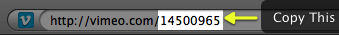
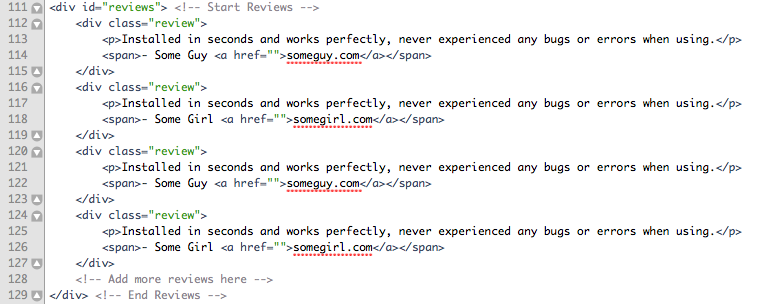

“SlickApp” Theme Documentation by “two2twelve” v1.4
“SlickApp”
Created: 8/30/2010
By: two2twelve
Email: info@two2twelve.com
Thank you for purchasing my theme. If you have any questions that are beyond the scope of this help file, please feel free to email via my user page contact form here. Thanks so much!
Table of Contents
- HTML Structure
- CSS Files and Structure
- JavaScript
- PSD Files
- Sources and Credits
- PHP Code Explanation
- Theme Options
A) HTML Structure - top
This theme is a 1-page fixed layout with 5 jQuery-tabbed sub pages. Here is the general structure.

The div with the id of "top_content_wrap" contains the main info for the app, including the screencast, logo, description and buy button.
Each page is wrapped in a div that is commented and has the ID of the page name or section (ex: The homepage is contained in a div with the ID of “home”).
If you would like to edit the color, font, or style of any elements in one of these columns, you would do the following:
#div_id a {
color: #someColor;
}
If you find that your new style is not overriding, try moving down to the bottom of the CSS file. This will ensure it overrides any other conflicting styles.
B) CSS Files and Structure - top
There is one CSS stylesheet in this theme which contains all of the specific stylings for the theme and is located in the stylesheets/ folder.
The file is separated into sections using:
/*-------------------------------------------- Section Name ---------------------------------------------*/ some code /*-------------------------------------------- Section Name ---------------------------------------------*/ some code
For every section in the HTML there is a corresponding CSS section. To update the CSS for any area of the theme, simply look for the containing div for that area, then look for the commented CSS section with that same name.
C) JavaScript - top
This theme imports six Javascript files.
- jQuery v1.4.2 - The main javascript framework library
- jQuery ScollTo - A library that provides scrolling functions
- jQuery SerialScroll - A library that handles automated scrolling (for reviews)
- Fancybox 1.3.1 - A library that provides lightbox functionality for screenshots
- jQuery Tools 1.2.4 - A library that handles the tabbed navigation
- SlickApp - Custom theme-specific javascript functions
More specifically, the SlickApp (slickapp.js) Javascript file adds the CSS3 property, border-radius, to a few areas of the theme in addition to activating the other aformentioned libraries. Lastly, towards the bottom the the slickapp.js file, is the code for the ajax-powered contact form.
D) PSD Files - top
I've included the fully sliced psd making it easy to find and update images within the theme.
If you'd like to change any image within the theme, follow these simple steps:
- Locate the image you wish to edit in the images/ folder, for example, we'll take the logo file named "logo.jpg" as an example
- Open the PSD file in Photoshop and make the necessary changes to the logo
- Navigate to File > Save for Web & Devices
- Click on the logo slice to select it, then click Save
- Towards the bottom of the file browser dialog, ensure the "slices" dropdown is selected on "Selected Slices"
- Save image into the images/ directory, replacing the old one
Repeat these steps for any of the other images you wish to edit.
E) Sources and Credits - top
I've used the following fonts and icons as listed.
- Aller Font (logo) - http://www.fontsquirrel.com/fonts/Aller
- Black Social Media Icons - http://www.iconfinder.com/search/?q=iconset%3Ablack-icon-social-media
D) PHP Code Explanation - top
This theme uses a simple PHP mailer script for the contact form.
In the /scripts/ folder of the theme you should see a file called "send_mail.php". This file is used for submitting the contents of the contact form from the "Contact" page and emailing the contents to your specified email address.
To specify an email address for the form to submit to:
Open the "send_mail.php" file with any text editor. Find the following lines and replace these areas with your information.
$site_owners_email = 'you@yourdomain.com'; // Replace this with your own email address $site_owners_name = 'Your Name'; // Replace with your name $mail->Mailer = "smtp"; $mail->Host = "mail.yourdomain.com"; // Your mail server $mail->Port = 25; $mail->SMTPAuth = true; // Enable SMTP authentication $mail->Username = "you@yourdomain.com"; // Your SMTP username $mail->Password = "yourpassword"; // Your SMTP password
You can use your own mail server details here, or a mail server such as gmail.
E) Theme Options - top
Adding Your App's Screencast
This theme features a customizable screencast contained within the image of an iPhone. The screencast must be hosted at Vimeo (http://vimeo.com) and embedded using the special embed code provided with the theme.
You can easily update this to use your app's screencast by following these simple steps:
- Upload your screencast to Vimeo. If you don't already have an account, you will need to signup (it's free).
- Once your upload is complete, navigate to the video’s page and copy the video’s ID from the url as shown below:
 - Next, open the “index.html” file and find the Vimeo embed code located near the top of the theme

- Replace the numbers following the “clip_id” in the embed code’s “value” and “src” with the id you copied from above.
Optionally, you can remove this entire line and uncomment the area for "static screenshot" if you'd prefer to use an image instead of a video.
Updating Reviews
To edit or add reviews to the homepage, locate the following block of code:

To update an existing review, edit the contents within the div with the class of "review".
To add a new review, copy the entire div with the class of "review" and paste it directly before the closing tag of the "reviews" div.
Once again, thank you so much for purchasing this theme. As I said at the beginning, I'd be glad to help you if you have any questions relating to this theme. No guarantees, but I'll do my best to assist. If you have a more general question relating to the themes on ThemeForest, you might consider visiting the forums and asking your question in the "Item Discussion" section.
Two2Twelve
http://themes.two2twelve.com